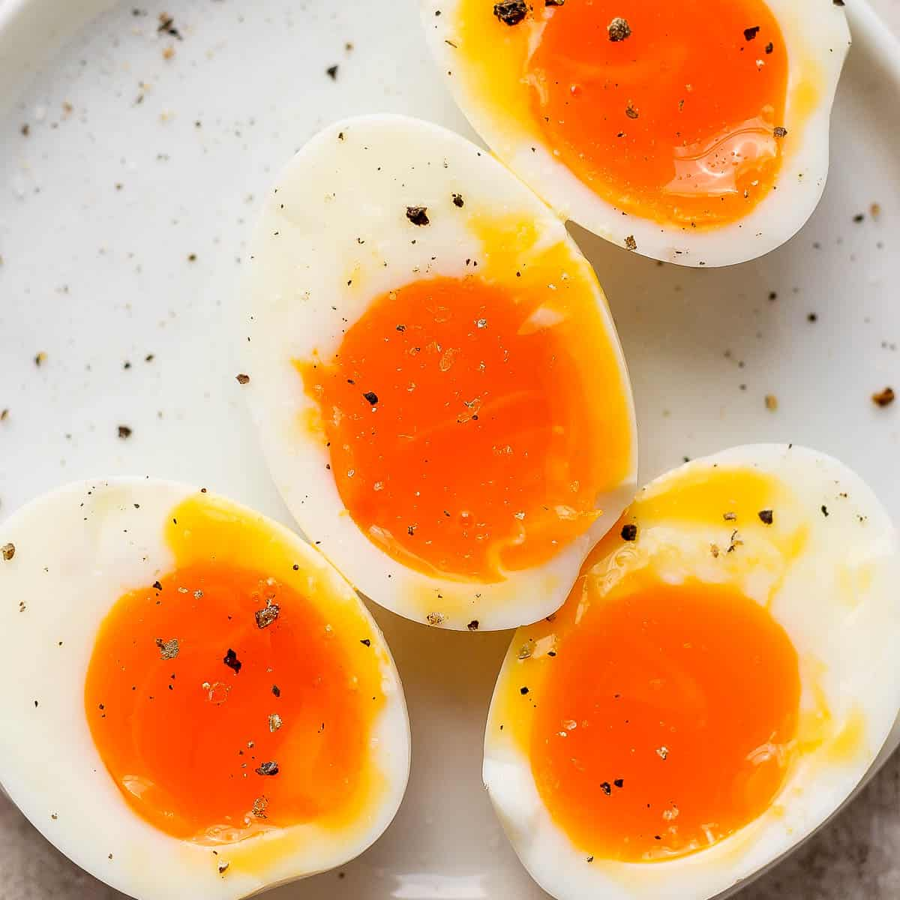

Soft Boiled Eggs

Description
When I was a kid, we would often eat hard boiled eggs for breakfast. At the time, our go to approach was to put the eggs in cold water, turn heat on, wait till water boiled and then another 5 minutes. That would give us a perfectly hard boiled egg.
However, this doesn't work if one wants a soft boiled eggs like those shown above. Because every stove is different, and depending on
the power of your hob and amount of water you are boiling, the time it takes to bring to boil varies, and even cutting your 5 minutes in half
does not guarantee that your eggs will turn out perfectly. So you need to put eggs in already boiling water and rethink your timings.
Ingredients
- Any number of eggs;
- Large volume of water (it is important, we want water to cool down as little as possible once you put cold eggs in, and continue cooking with little variation);
Steps
- Bring water to boil on high heat.
- Carefully immerse all eggs. Using table spoon is the best method. Bring to the bottom and let it roll over, and not drop from any height (it will crack and create a mess).
- Now boil for 5 to 6 minutes depending on whether the eggs are large or small. You will adjust this timing next time depending on how they turn out.
- Immediately put eggs in cold water to stop cooking and make peeling easier.
- Wait 2 minutes, peel, serve and eat. Enjoy!
Back to List